En esta página se explica la instalación y uso de los complementos de Firefox.
 No he terminado de actualizar las capturas a la última versión de Firefox. Algunas capturas de esta página están tomadas de versiones anteriores, por lo que pueden ser ligeramente distintas de lo que se ve en la última versión.
No he terminado de actualizar las capturas a la última versión de Firefox. Algunas capturas de esta página están tomadas de versiones anteriores, por lo que pueden ser ligeramente distintas de lo que se ve en la última versión.
Una de las características que ayuda a explicar la popularidad de Firefox es la gran cantidad de complementos que permiten ampliar y personalizar Firefox y que pueden ser creados y distribuidos por cualquiera. Existen diferentes tipos de complementos:
Los complementos se pueden conseguir:
Las extensiones se distribuyen en forma de archivos con extensión xpi y su instalación es automática.
El Administrador de complementos permite conocer los complementos disponibles, instalarlos, configurarlos o desinstalarlos.
El Administrador de complementos se puede abrir de varias formas, mediante:
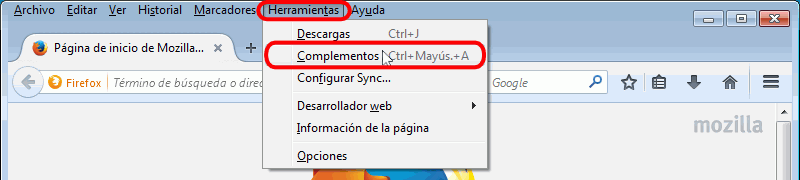
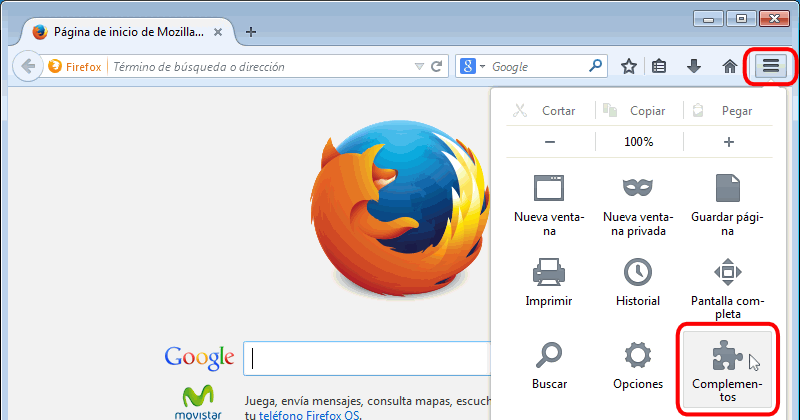
El Administrador de complementos se abre en una nueva pestaña:

El Administrador de Complementos se divide en varias secciones a las que se accede con los iconos de la izquierda:

Si no conocemos el nombre del complemento o simplemente queremos informarnos de los complementos existentes, yo personalmente aconsejo utilizar el sitio web Firefox Add-ons. En esa página podemos encontrar los complementos clasificados por muchos criterios (categorías, popularidad, valoraciones de los usuarios, novedades, colecciones temáticas, etc.) y mucha información sobre cada complemento.
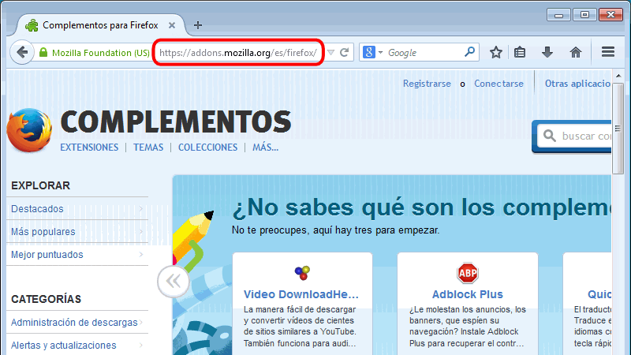
Pero si ya conocemos el nombre exacto del complemento y simplemente queremos instalarlo, la forma más cómoda es utilizar el Administrador de complementos, como se explica en el apartado Instalar extensiones desde el Administrador de complementos.
La sección "Obtener complementos" del Administrador de complementos también muestra información sobre los complementos disponibles y esa información la obtiene de la web Firefox Add-ons, pero en el Administrador de complementos se ofrece menos información que en la web.
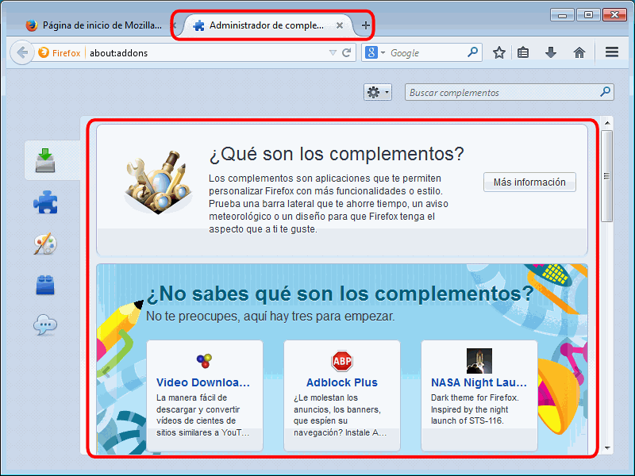
Las extensiones de Firefox se pueden instalar de tres formas distintas:
Por motivos obvios de seguridad, la instalación de extensiones en Firefox debe estar controlada.
Por ello, en el menú debe mantenerse marcada la opción "Advertir cuando algún sitio intente instalar complementos". En ese caso, Firefox sólo permitirá la instalación de extensiones si el usuario autoriza previamente al sitio web.
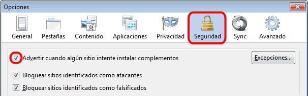
Haciendo clic en el botón "Excepciones..." puede consultarse la lista de sitios desde los que está permitido instalar excepciones.

Los sitios web oficiales addons.mozilla.org, getpersonas.com y marketplace.firefox.com ya están incluidos.
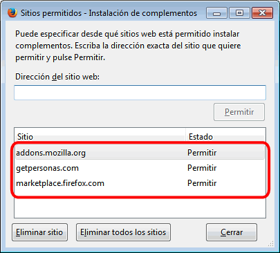
La instalación de un complemento desde el Administrador de complementos se ilustra a continuación con la extensión Web Developer (más adelante en esta misma lección, se comenta el uso de la extensión Web Developer).
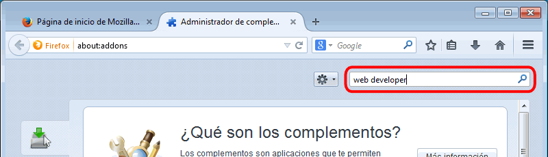

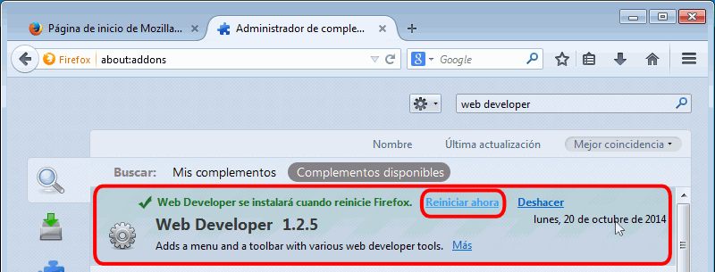

Todos los procesos de instalación de complementos son similares. los complementos suelen ser archivos con extensión .xpi. Desde la página web de la extensión en Firefox Add-ons hay que hacer clic en el enlace al archivo .xpi.
En el caso de Colorzilla habría que ir a la página https://addons.mozilla.org/es/firefox/addon/colorzilla/ y hacer clic en el botón "Añadir a Firefox".
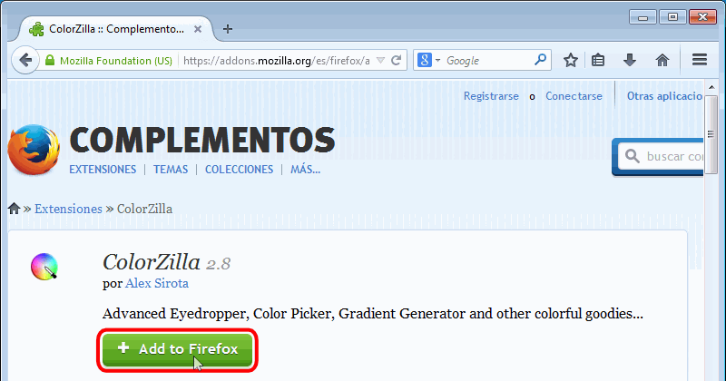
El proceso de instalación comienza pidiendo autorización para proceder a la instalación. Se debe hacer clic en el "Instalar ahora" para instalar la extensión o en "Cancelar" para no instalarla.
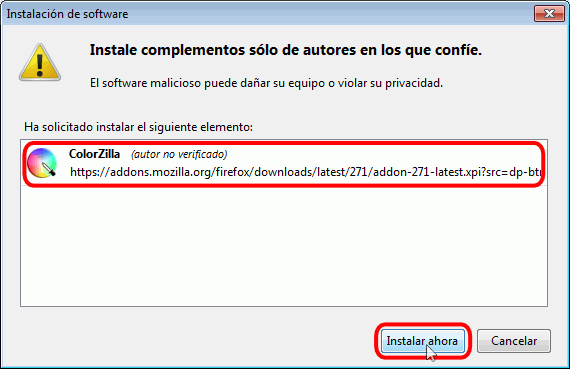
Tras unos segundos, aparece un aviso indicando que la instalación se ha completado y que es necesario reiniciar Firefox.

Al reiniciar Firefox, el Administrador de complementos muestra la extensión ya instalada.

Haciendo clic en el botón "Opciones" de la ventana de extensiones, se muestra información sobre la extensión instalada.
El proceso de instalación de complementos desde un sitio no permitido es idéntico al de instalación desde sitios permitidos, excepto en que al intentar instalar el complemento, Firefox muestra en la parte superior de la página web un letrero de aviso.
Desde la página web del complemento hay que hacer clic en el enlace al archivo .xpi. En el caso de Colorzilla habría que ir a la página http://colorzilla.com/firefox/ y hacer clic en el botón "install ColorZilla".

Firefox muestra una ventana de aviso que avisa de que un sitio web solicita instalar software en el equipo:

Haciendo clic en el botón Aceptar de la ventana y haciendo clic en el botón "Permitir", el proceso de instalación prosigue como en el caso anterior. El proceso de instalación comienza pidiendo autorización para proceder a la instalación. Se debe hacer clic en el "Instalar ahora" para instalar la extensión o en "Cancelar" para no instalarla.
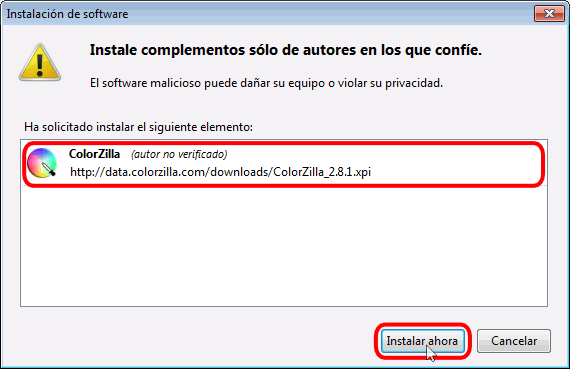
Tras unos segundos, aparece un aviso indicando que la instalación se ha completado y que es necesario reiniciar Firefox.
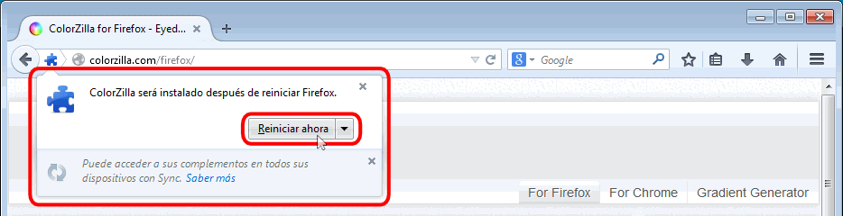
Al reiniciar Firefox, se muestra una página de bienvenida que confirma la instalación de Colorzilla.
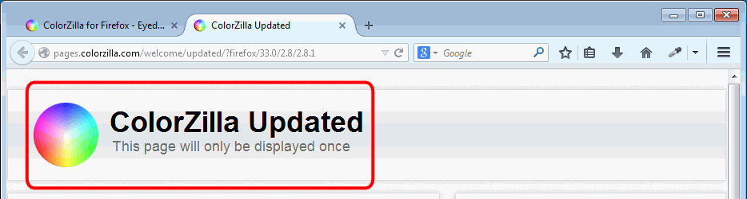
En este curso se recomienda la instalación y uso de los siguientes complementos:
Web Developer añade a Firefox una barra de herramientas con herramientas útiles para el desarrollo de páginas web. Web Developer está incluida en Firefox Add-ons, pero en la página web de Web Developer puede haber una versión más actual.
Actualmente (marzo de 2017), la versión más reciente de Web Developer para Firefox es la versión 1.2.12, publicada el 18 de febrero de 2017. También está disponible para Chrome (versión 0.4.8 del 15 de febrero de 2017).
En cdlibre.org hay una sección dedicada a Desarrollo web > Otros, con información detallada sobre la última versión estable publicada.
Web Developer dispone de una barra de herramientas propia. Para activarla o desactivarla, hay que marcar o desmarcar la opción de menú .
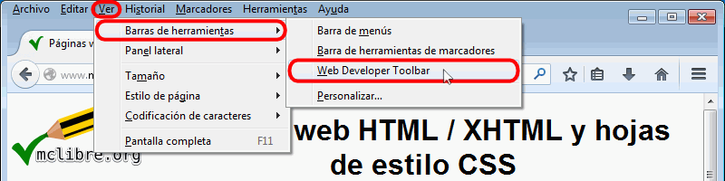
La barra de herramientas de Web Developer se muestra en la parte superior de la pantalla.
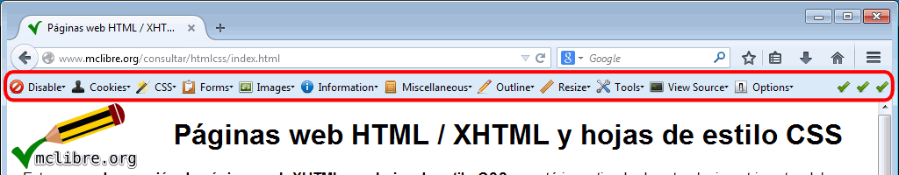
Si no se quiere tener la barra de herramientas visible, se puede acceder a todas las funciones de Web Developper mediante el menú

Web Developer permite la validación de varios tipos de documentos, con algunas limitaciones, mediante el menú :
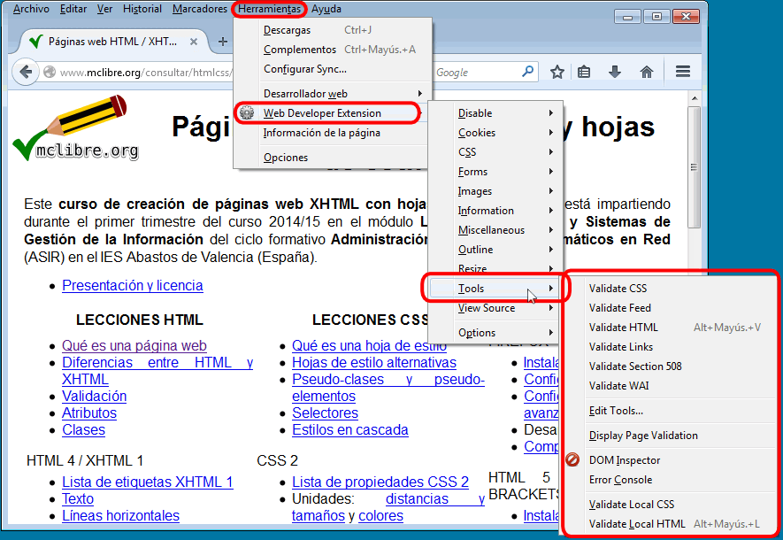
Las primeras opciones del menú permiten validar páginas web disponibles en Internet (http://....), mientras que las dos últimas permiten validar páginas web locales (que se abren en el navegador con la dirección file:///...).
Por completar: Atajos de teclado + Crear atajos de teclado
ColorZilla es un selector de colores que permite obtener el código RGB de los píxeles de la pantalla. Colorzilla está incluida en Firefox Add-ons, pero en la página web de ColorZilla puede haber una versión más actual.
Actualmente (marzo de 2017), la versión más reciente de Colorzilla para Firefox es la versión 3.3, publicada el 7 de marzo de 2017. También está disponible para Chrome la versión 2.0, publicada el 24 de diciembre de 2016.
Nota: Firefox incluye un selector de color más simple en las herramientas de desarrollador web.
Colorzilla se instala en el extremo derecho de la barra de navegación de Firefox y de Chrome:
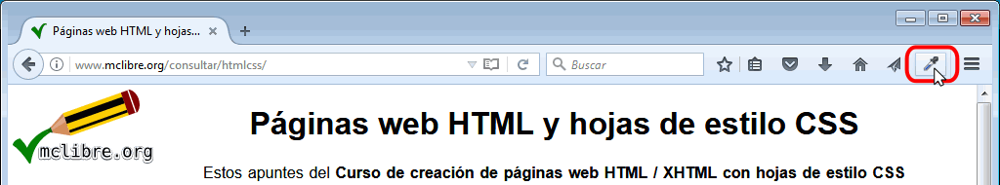
Para elegir el formato del código de color:

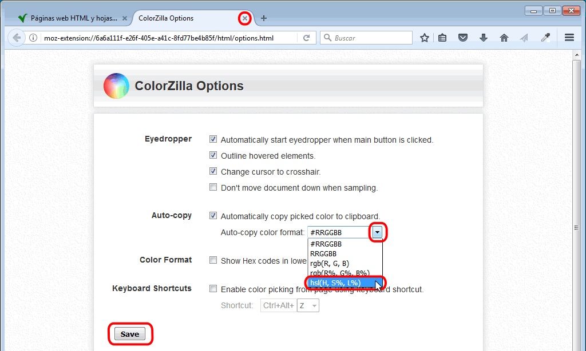
Para copiar un color de la pantalla:
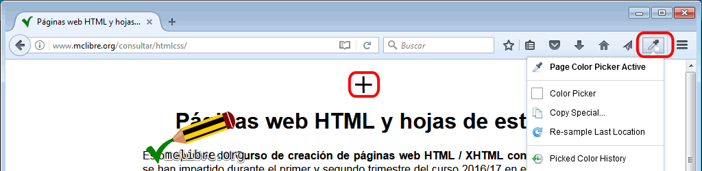
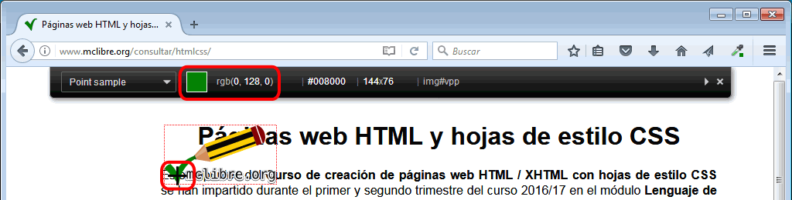

Podría probar la extensión View Source Chart